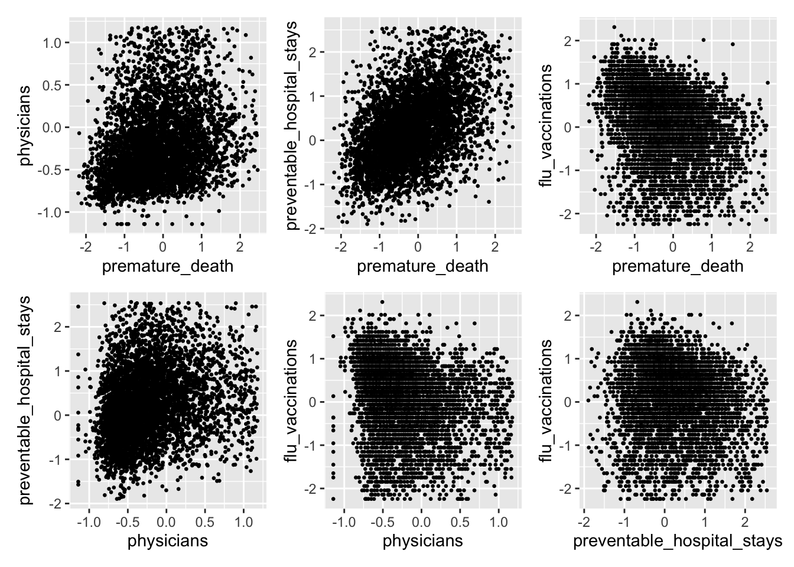
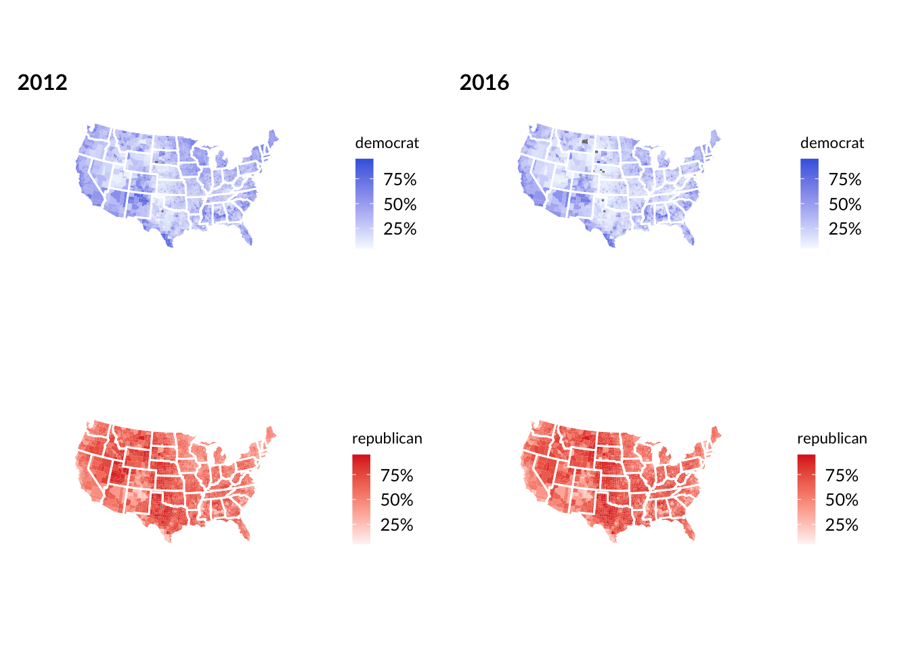
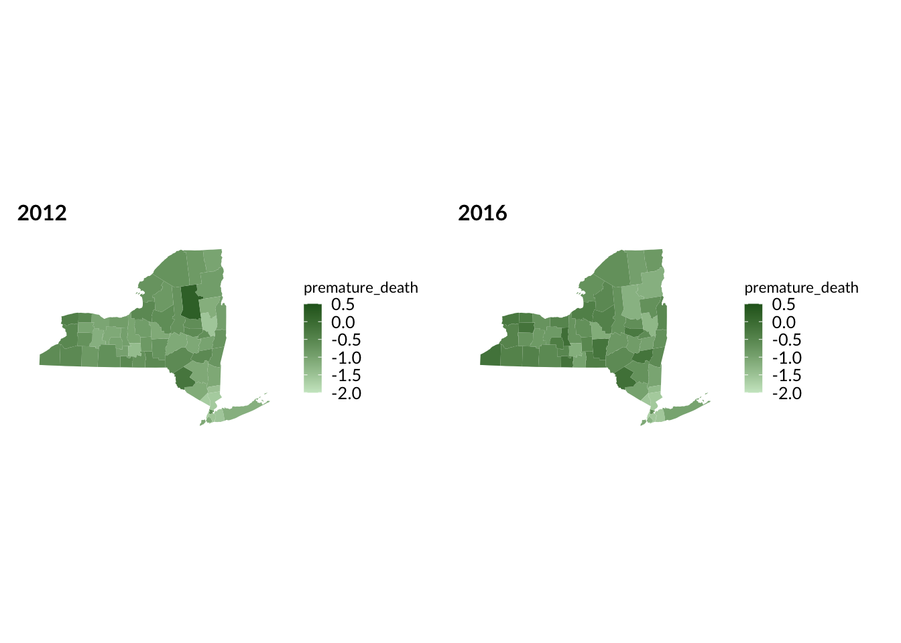
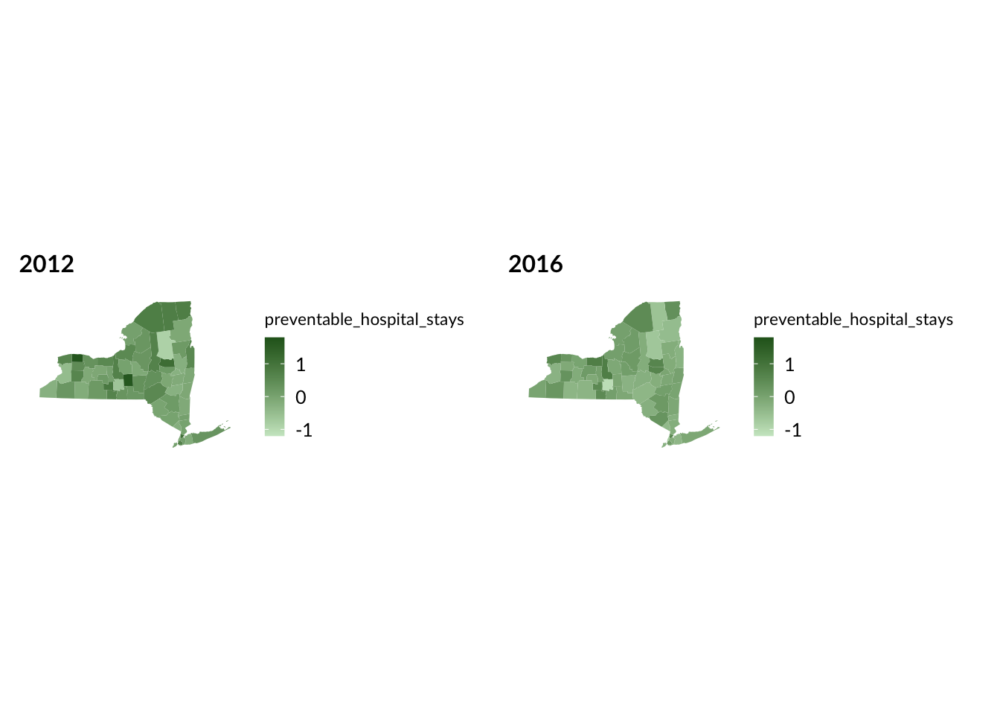
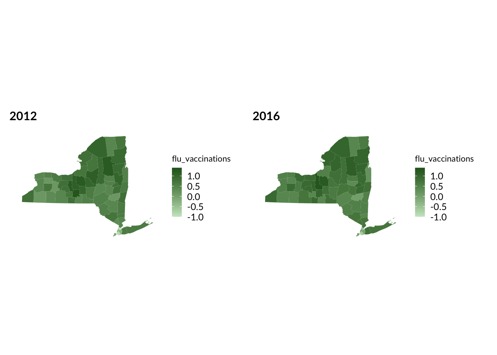

Connecting Political Views and Health Metrics
Riyadh Baksh (rhb2152), Anika Mitchell (am5088), Jeong Yun Yang (jy3306)
2024-12-07
Motivation
The goal of this project is emulate an ecological study in order to understand and visualize the relationship between political trends and outcomes on county-level public health in the United States. Specifically, we are interested in the potential correlations between a variety of health metrics and presidential election results in both 2012 and 2016. By understanding the relationship between these data, this project aims to understand sociopolitical and socioeconomic implications for health and wellbeing at a county level, and offer insights into patterns that may offer recommendations for broader application.
Initial Questions
Our main research question is: how do national and county level bipartisan voting patterns impact key health indicators (premature death, preventable hospital stays, number of physicians, and vaccination status) in 2012 and 2016. Our original research question was interested in assessing this relationship from 2000-2020, however we chose to constrain our data to using only 2012 and 2016 data after conducting early data wrangling and exploratory analyses that identified this set of time as having the most robust dataset available to appropriately assess our relationship of interest. Additionally, this date range (2012-2016) is of particular public health interest, as the decades long trend of increased life expectancy between 1959 and 2016 started to noticeably slow down after 2014 (Woolf and Schoomaker, 2019).
Data
For information on health outcomes by county and by year, we used information from this source: https://www.countyhealthrankings.org/health-data/methodology-and-sources/data-documentation
For data on election results by county and by year, we consulted the MIT election datasets: https://electionlab.mit.edu/data
We started by cleaning the election dataset, which
contains information such as county name, state, year, party, and total
votes. The mutate function was used to calculate the percentage of
votes. The common variable year_county was used to uniquely
match the data for a given year and county FIPS code.
We identified four measures that are the most robust in the datasets:
Premature death, Preventable hospital stays,
Primary care physicians, and Flu vaccinations,
and filtered for these four measurements. Since these measurements have
different units and scales, we standardize each variable to improve
visualization and statistical analysis. This means that for each health
metric, a value of zero means the average, and each unit represents one
standard deviation away. For example, a premature_death
value of 1 means that county has a premature death rate that is one
standard deviation higher than the average county.
Here we join the election and health
datasets by a common variable year_county. Through our
exploratory analysis, we found that years 2012 and 2016 had the least
amount of missing data, hence we filter for data for these years. Then
we remove the outliers for each measurements.
Exploratory Analysis
We first started by exploring each dataset individually. For the
election data, a plot was made comparing the county vote
share for democrat and for republican. It was
observed that in many counties, the sum of the democrat and
republican percents do not add to 1, which indicates the
presence of third-parties. That being said, the graph below shows
there’s a limit where no points are above the line \(y=x\). This makes sense because the vote
share in a specific county cannot exceed 100%.

Next, we considered how the four health variables under investigation
are related to each other. This was important to make sure they are all
independent from each other. In general, there is largely random
distribution of points, so there is no clear pattern. However, the
relationship between premature_death and
preventable_hospital_stays does suggest a positive
correlation. Counties with higher premature death rates also seem to
have more preventable hospital stays, which makes sense because a
premature death means by definition that it was a preventable death.
There also seems to be a negative correlation between
premature_death and flu_vaccinations. With
greater flu vaccinations, we observe fewer premature deaths.

Now, we began to look at the correlation between election results and
these four health metrics. For simplicity, the outcome or response
variable was chosen to be the republican vote share.
However, as we demonstrated above, this is negatively correlated with
the democrat vote share.
There does seem to be a lot of random scatter and a clear pattern is
hard to justify. However, some interesting observations are the positive
correlations between physicians and republican
vote share. There also seems to be a negative correlation between
flu_vaccinations and republican vote
share.

Geographic Plots
We also decided to include maps as part of the exploratory analysis.
The plots below show the nationwide county-level vote share. The darker
blue represents higher democrat vote share. The darker red
represents higher republican vote share. As expected, these
are inversely related - that is, a darker blue area would also be
lighter red. To improve comparability, the scales are fixed so that the
same shade of blue, for example, means the same thing between the two
years. We noticed that when going from 2012 to 2016, the map became a
lot lighter blue, reflecting the decrease in the democrat popular vote
from 2012 to 2016. Note: Alaska was removed due to a different way of
assigning counties, and thus Hawaii was also removed so that we only
considered the contiguous US.

While the intention was to look at nationwide correlations, we realized that there are many factors that influence voting across an entire country. It is also more difficult to identify trends in large heterogeneous populations. Therefore, we decided to also zoom in on New York state. We also observed that from 2012 to 2016, the state became lighter blue and darker red.

Next, we considered the geographic distributions of the health metrics. It would be difficult to see trends across the entire US, so instead, we are only looking at New York state.
There does not seem to be a clear pattern for
premature_death, as some counties became lighter whereas
others became darker.

The physicians rate in each county appears to stay
roughly constant when going from 2012 to 2016.

At first glance, it seems that there were fewer
preventable_hospital_stays in 2016 compared to 2012.

Further, flu_vaccinations seems to have stayed roughly
constant from 2012 to 2016.

Additional Analysis
Next, we conducted a series of multiple linear regressions to
quantify the effect of the health metrics on the republican
vote share. There were a total of six regressions: the US for both
years, the US for 2012, the US for 2016, NY state for both years, NY
state for 2012, and NY state for 2016. The estimates for the
coefficients and the corresponding R2 values are summarized in the
tables below. Note that while not all estimates were significant, most
were at the 5% level. These numbers will be further discussed in the
next section.
| term | US_Overall | US_2012 | US_2016 | NY_Overall | NY_2012 | NY_2016 |
|---|---|---|---|---|---|---|
| (Intercept) | 0.624 | 0.600 | 0.641 | 0.520 | 0.431 | 0.548 |
| premature_death | 0.025 | 0.016 | 0.023 | 0.113 | 0.051 | 0.109 |
| physicians | 0.078 | 0.062 | 0.089 | 0.079 | 0.067 | 0.106 |
| preventable_hospital_stays | 0.005 | 0.008 | 0.016 | -0.027 | -0.009 | 0.009 |
| flu_vaccinations | -0.016 | -0.010 | -0.024 | 0.088 | 0.078 | 0.102 |
| US_Overall | US_2012 | US_2016 | NY_Overall | NY_2012 | NY_2016 |
|---|---|---|---|---|---|
| 0.125 | 0.076 | 0.179 | 0.387 | 0.313 | 0.439 |